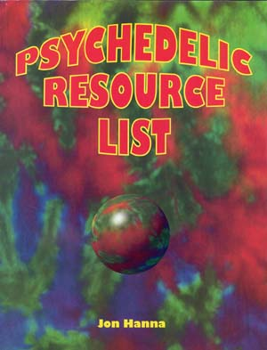

|  |
This book lists hundreds of sources for materials and information relating to psychedelics of all kinds. The book provides in-depth background information for each resource. Most of the commercial sources for Salvia divinorum are listed. Available for $19.95 plus $3.00 S/H (USA), $5.00 (foreign), CA residents add $1.55 for sales tax. Order from:
POB 19820-DS Sacramento, CA 95819. |